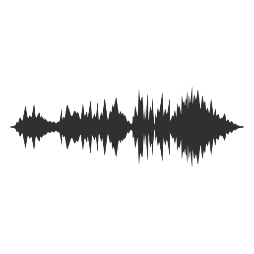
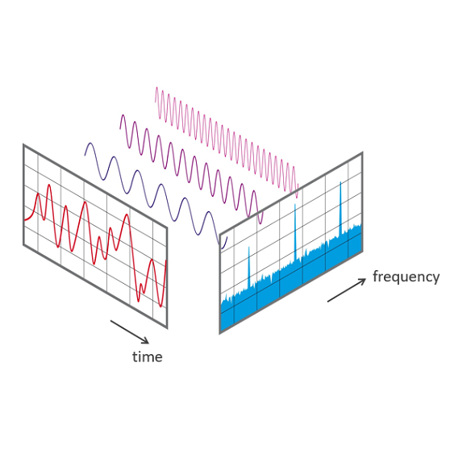
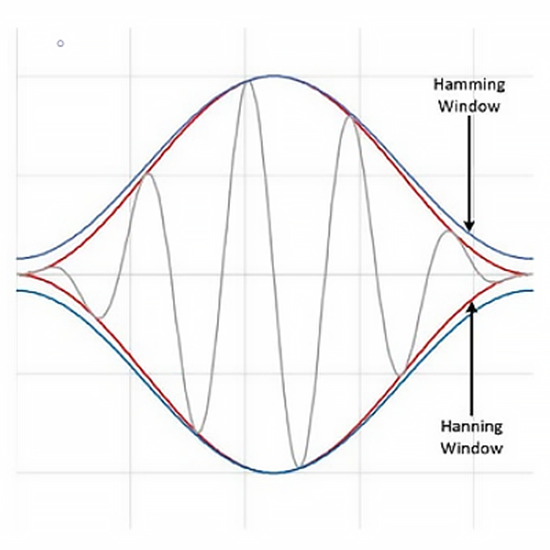

For this particular project is programming intensive since we are dealing with real-world signals and converting them into different frequencies using a microphone.

Research
FFTs & Windowing
Before digging in, we need to understand what are FFTs and Windowing. FFTs stands for Fast Fourier Transforms (FFTs), and it can be powerful in understanding everyday signals and troubleshooting errors in signals. Although the Fourier transform is a complicated mathematical function, it isn’t a complicated concept to understand and relate to the measured signals. Essentially, it takes a signal and breaks it down into sine waves of different amplitudes and frequencies. In real-world signals, all of them are sum of sines. If we can construct a signal using sines, we can also deconstruct signals into sines. Once a signal is deconstructed, we can then see and analyze the different frequencies that are present in the original signal.

FFTs
The Fourier transform deconstructs a time-domain representation of a signal into the frequency domain representation - A signal is sampled over a period of time and divided into its frequency components. These components are single sinusoidal oscillations at distinct frequencies each with their own amplitude and phase.

Windowing
Although performing an FFT on a signal can provide great insight, it is important to know the limitations of the FFT and how to improve the signal clarity using windowing. Spectral leakage is caused by discontinuities in the original, non-integer number of periods in a signal and can be improved using windowing. Windowing reduces the amplitude of the discontinuities at the boundaries of each finite sequence acquired by the digitizer.
Library
Arduino FFT
Fortunately, there is an Arduino Library that helps to do FFT calculations for the signals received. The library I used is called ArduinoFFT.h. Learn More
Setup
Defining Pins
Here are the data pins I use and how I setup my Arduino. I use buttons, microphone and LED matrix.
Loop
Functions
These are the functions I used in my program and I will try my best in-detail to explain.
Variables
Sampling Variables
These are the following arrays & variables I use for the FFT functions.
Sampling
Sampling at Powers of 2
First, I sampled 64 signals from the microphone. The samples must be in powers of 2 is because FFT relies on breaking the required calculations into smaller ones that can be done very rapidly. The smallest unit is a 2 point calculation. That is why most FFT implementations require that the number of points being analyzed be equal to a power of 2 (256, 512, 1024, etc.). However, more samples will mean more data to be stored by the Arduino to compute and an Arduino Nano has a dynamic memory of only 2kb. Storing 64 samples has used up to 60% of the memory while using 128 samples will exceed the memory limit, causing the arduino to fail. There are also limitations having lesser samples. The FFT is unable to calculate frequecies higher than 8khz. It is evident in my testing where the microphone could not pick up frequencies below 128hz or above 16khz. Hence in this project, I am using these following 8 bands: 64hz, 128hz, 256hz, 512hz, 1khz, 2khz, 4khz, 8kz.
Function
FFT Calculation
When sampling signals from the microphone, we also need to know the sampling frequency. Sampling frequency determines the bandwidth of the FFT, so with a higher sampling frequency can analyze higher frequencies. I use micros() which works similarly to millis() to find the time-lapsed when sampling 64 signals. Signal samples are stored in the vReal array. vImag will be zeroed in case of looping to avoid wrong calculations and overflows. I perform FFT given by the library to calculate the raw Magnitude values and frequencies of each signal and store them into their respective arrays.
Function - Part 1
Frequency Bands
I am not exactly know what is the actual highest or lowest frequecy it can detect. To be accurate in finding the frequency range of the microphone, I use the difference between the 2nd and last raw frequency sample and divide them into 8 bands. I did not use the 1st raw frequency sample because the value is always 0.
Function - Part 2
Sorting Magnitude
However, the values in the arrays are not sorted and are of different frequencies and magnitude. Here I sort the different signals to their respective bands and summed their magnitude altogether using switch case statements before finding their average.
Function - Part 3
Average Magnitude
I use the sum of magnitude divided by the number of magnitude counts that fall into each band.
Calibration - Method 1
Auto Max-Min
I use two if-statements such that if the final magnitude falls above maxMag or below minMag, it updates to maxMag and minMag to its value respectively. However, there were problems using this method. The microphone picks up strange outliers frequencies in each band, causing the updated maxMag and minMag values to have a big difference. The resulting normalized value will be inaccurate, causing LEDs to light up at the wrong positions.
A safer way to calibrate the values without noise errors is to manually record down the values when the room is silent for minMag values and play a piece of loud music for maxMag values. When there is no sound, the LEDs light up on row 0. However, some normalized magnitude values fluctuate at low frequencies causing some LEDs to light between rows 0 and 2. This problem might be from the microphone which I have no control over but it is good enough to test the frequencies.
This works similar to method 2, I record down the values of at least 100 samples when the room is silent for each band of minMag values. Using excel sheet, I find the average minMag and use that as the threshold. Using this method eliminates noise error and it is more accurate compared to the preuious two methods.
I use will Method 3 to find the normalised magnitude value find the highest LED per band. To light up and individually control the LEDs in the matrix, I use the Adafruit_NeoPixel.h. Learn More
Array
2D Array Index
To select the LEDs in the matrix, I use 2D array (8x8) to define the index of the LEDs in the matrix. Another two 2D arrays is used for assigning hue and brightness to the LEDs.
Function
Assign Colour
To get the cool RGB lighting, I use pixels.ColorHSV() because it is easier to cycle through the color wheel in the program. The color wheel has a 16-bit range and loops back to '0' after reaching the limit, hence producing the rainbow cycle effect. The pixels.ColorHSV() has 3 parameters: Hue (0~65526), Saturation (0~255) and Brightness (0~255). I use the normalized value to find which LED in each column (band) to light up. To ‘ON’ the LEDs in pixels.ColorHSV(), I set the brightness value to '8'. I assign the hue and brightness values in their 2D array.
Function
Setup & Display
Once all the values are assigned, it is time to display each of the LED values. I use pixels.setPixelColor() to set the values to the LEDs. The pixels.setPixelColor() has 2 parameters: LED Index (0~63), Color (HSV). The LEDs have their specific values set, to display the LEDs I use pixels.show().
Function
Reset Brightness
Because in pixels.ColorHSV(), I cannot use pixels.clear() to turn off the LEDs. It will make "ALL" the LEDs repeatedly turn on and off which does not look good. Hence I use brightness '0' to reset the individual LEDs in the array.
Function
Lighting Types
I use pullup buttons to change the lighting types of the audio visualiser. The make sure the button has a state change detection which I have learned from one of the Arduino lessons. This to ensure that the button can only trigger once everytime it is pressed down. I use the middle button to change the lighting type of the audio visualiser.
Function
Manual Change Colour
There are two lighting types for the audio visualiser: RGB and Single Colour. In RGB lighting type, it continuously cycles through the hue values of the colour wheel. In Single Colour lighting type, the user is able to change the hue value of the LED. Using the left button and right button to decrease and increase the hue value respectively.
Challenges
What happened
Understanding the concept of deconstructing sound signals may be difficult at first. I have to read up a lot of papers to sort of get the idea of FFTs & Windowing. Not only that, the biggest challenge I had was to understand how to use ArduinoFFT. There were not a lot of helpful sources to guide me to understand the FFT functions in Arduino. The source I reference to make this audio visualisation work is this example from GitHub.Despite the lack of useful comments in the example, I managed to get an idea how the FFT functions work.
Challenges
What happened
The second challenge was calibrating the magnitude values (method 1 & 2). The values are not very consistent received from microphone, causing the LEDs to flunctuate between columns. Though method 3 has improved accuracy, the slow data processing of the Arduino Nano limits the potential of this microphone.